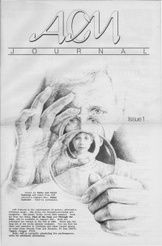

Jeff JohnsonOn the cover|  | 1989
ACM Journal | Media coverage:- Jan 1983 in Campus Life "Impressions: Philosophical Rock", by Gord Wilson
- Oct 1986 in CCM "Notebook: Jeff Johnson's Sonic Splendor", by Paul Baker
- 1987 in Heaven's Metal "Johnson on Johnson", by Jeff Johnson
- Sum 1987 in Harvest Rock Syndicate "More Music For The New Frontier", by T. L. Faris
- Sep 1989 in CCM "Christian Musician: The Pilgrimage of Jeff Johnson", by Gord Wilson
- Win 1989 in Harvest Rock Syndicate "Jeff Johnson", by Chris Well
- 1991 in ACM Journal "Jeff Johnson", by Gord Wilson
- Jul 1991 in The Wittenburg Door "Interview: Jeff Johnson"
- Sep 1991 in Harvest Rock Syndicate "Spotlight: Romance in the New Age", by Jori Butler
- Apr 1992 in CCM "In The News: Making Songs For Albion", by Brian Quincy Newcomb
- Sep 1992 in Syndicate "Stories About Albion", by Chris Well
- Oct 1996 in CCM "Conversations: Jeff Johnson", by Jim Long
- Mar 1997 in 7ball "[modern praise and worship]", by Beth Blinn
- Jul 1997 in CCM "Celtic Connections", by Steve Rabey
- Feb 1998 in Aspire "What Is New Age Music, Anyway?"
Albums & reviews:1976: The Anvil of God's Word1977: Please Forgive us Lord1980: The Face of the Deep1982: Through the Door1983: Shadow Play1984: Icons1985: No Shadow of Turning1986: Fallen Splendor1987: The Awakening with Sandy Simpson1987: Born of Water with David Friesen, David Hagelganz1988: Why Should The Heart Not Dance?1988: This Mystery I Pose with Sandy Simpson1989: Pilgrimage1990: Centerpoint1990: Similitudes1990: Tale of Three Trees1991: Great Romantics1994: The Isle of Dreams1996: Psalmus1997: Navigato1998: Prayers of St. Brendan - The Journey Home2001: A Quiet Knowing: Canticles for the Heart2005: Vespers - Light Into Light2007: Glorious Day2012: WaterSky with Phil Keaggy Books about Jeff Johnson- "Jeff Johnson (and Brian Dunning and Sandy Simpson)" in The Encyclopedia of Contemporary Christian Music (Mark Allan Powell, 2002)
Published articles:1 article credited in HM: 1987.4 articles credited in Syndicate: 1994. |